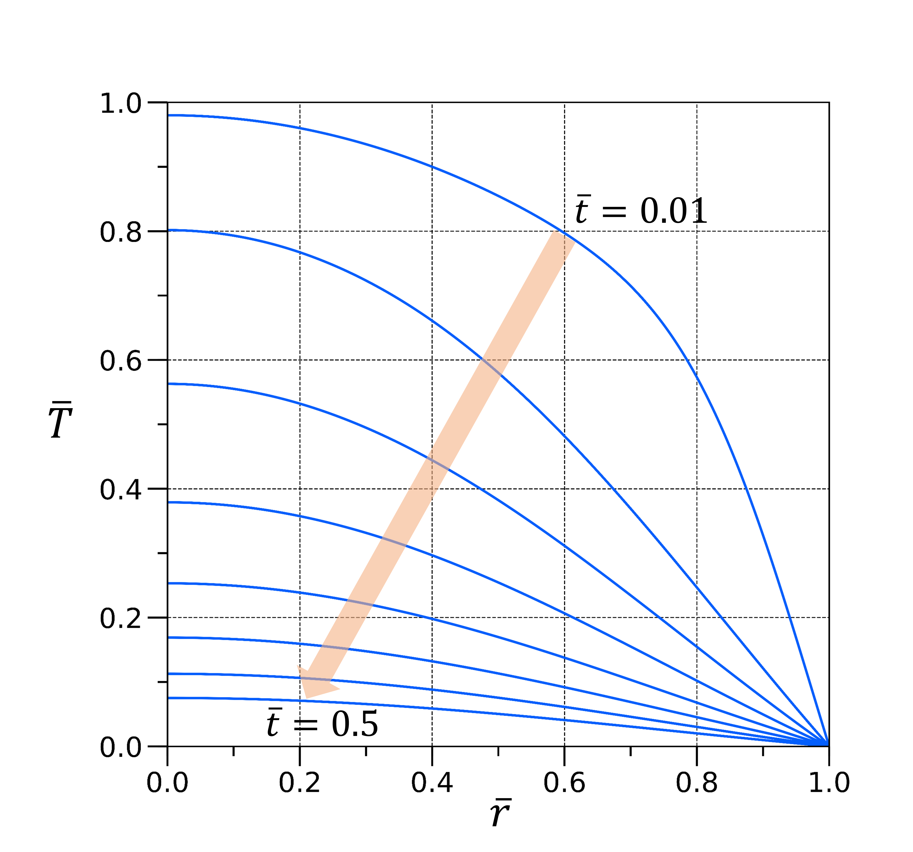

Integral transform methods are used to simplify solving partial differential equations. Fourier and Laplace transforms are perhaps the most common methods. We consider here the Hankel transform which is a powerful tool for solving partial differential equations especially in the cylindrical coordinates.
The Hankel transform of a function $f(r)$ is $$ \widetilde{f}(s)=\int_0^{\infty} f(r) J_n(sr) r \ dr $$ where $J_n$ represents a Bessel function of the order $n$. The discussion here will specifically deal with $J_0$. The inverse Hankel transform is $$ f(r)=\int_0^{\infty} \tilde{f}(s) J_n(sr) s \ ds $$
Keen readers probably have noticed by now that unlike the Laplace transform finding the inverse Hankel transform doesn't involve dealing with the complex plane.
For illustrative purposes let us consider a radial heat problem in a cylinder. $$ \frac{\partial T}{\partial t}=\kappa \Big(\frac{\partial^2 T}{\partial r^2}+\frac{1}{r}\frac{\partial T}{\partial r}\Big) \mathrm{\ \ \ }0\leq r\leq a \\ T(r,0)=T_0-kr^2 \mathrm{ \ \ \ \ } T(a,t)=0 \mathrm{\ \ \ \ } t>0 $$ where $T(r,t)$ represents the temperature in the cylinder at $r$ and time $t$. First we non dimensionalise the equations above using $a,T_0$ and $a^2/\kappa$ as the characteristic length, temperature and time resepectively. The non dimensionalised variables are represented as $\bar{r},\overline{T}$ and $\bar{t}$. We now consider solving this problem using Hankel transform.
We shall now use a slightly modified form of the Hankel transform called the finite Hankel transform first proposed by Sneddon.$^{1,2}$ The finite Hankel transform of order 0 is given by $$ \widetilde{f}(s_i)=\int_0^{1} f(\bar{r}) J_0(s_i\bar{r}) \bar{r} d\bar{r} $$ Instead of the limits of integration extending out to infinity the limits are restricted within the domain of the problem (here $0\leq \bar{r} \leq 1$) and $s_i$ is of one of the positive roots of $J_0(s)=0$. The theory utilises the idea that if a solution $f(\bar{r})$ exists then it can be written in the form of a Fourier-Bessel series $$ f(\bar{r})=\sum_{i=1}^{\infty} A_i J_0(s_i\bar{r}) $$ As typically done in Fourier series, the coefficients can be found by using orthogonal properties of the functions. The Bessel functions have the following orthogonal property$^{3}$ $$ \int_0^1 J_0(s_i\bar{r})J_0(s_j\bar{r}) \bar{r}d\bar{r}=\frac{\delta_{ij}}{2}(J_1(s_i))^2 $$ This implies the coefficient $A_i$ is $$ A_i=\frac{2}{J_1(s_i)^2}\int_0^1 f(\bar{r})J_0(s_i\bar{r})\bar{r} d\bar{r}=\frac{2 \widetilde{f}(s_i)}{J_1(s_i)^2} $$ where the last simplication is made using the definition of the finite Hankel Transform. Thus, $$ f(\bar{r})=2\sum_{i=1}^{\infty}\frac{\widetilde{f}(s_i) J_0(s_i \bar{r})}{J_1(s_i)^2} $$ The above equation is really useful. It is the inversion formula for the finite Hankel transform. Thus, only solving for the appropriate $\widetilde{f}(s_i)$ and substituting the result solves the complete problem.
Let us now consider this strategy for the heat problem. The finite Hankel transform of the RHS of equation 3 is a textbook result (see chapter 6 Tranter$^4$). However, we sketch out the steps for clarity.
$$
\frac{\partial \ \widetilde{T}(s_i,\bar{t})}{\partial \bar{t}}=
\int_0^1 \Big(\frac{1}{\bar{r}}\frac{\partial}{\partial \bar{r}} \Big( \bar{r} \frac{\partial \overline{T}}{\partial \bar{r}} \Big)\Big) J_0(s_i\bar{r}) \bar{r} d\bar{r}
$$
The RHS is integrated by parts
$$
\frac{\partial \ \widetilde{T}(s_i,\bar{t})}{\partial \bar{t}}=
\Big[ \bar{r} \frac{\partial \overline{T}}{\partial \bar{r}}J_0(s_i\bar{r})\Big]_0^1-s_i\int_0^1\bar{r} \frac{\partial \overline{T}}{\partial \bar{r}}J'_0(s_i\bar{r}) d\bar{r}
$$
The upper limit on the boundary term is zero because $J_0(s_i)=0$ by construction. The lower limit on the boundary term is zero as well where the implicit assumption is that $\partial \overline{T}/\partial \bar{r}$ doesn't diverge. Integrating the second term by parts
$$
\frac{\partial \ \widetilde{T}(s_i,\bar{t})}{\partial \bar{t}}=
-s_i\Big( \Big[\bar{r}J'_0(s_i\bar{r})\overline{T}\Big]_0^1-\int_0^1 (J'_0(s_i\bar{r})+s_i\bar{r}J_0^{''}(s_i\bar{r}))\overline{T}\Big)
$$
The boundary terms are once again zero. To simplify the second term one important observation is made. The term inside the integral is the Bessels differential equation of the form
$$
x^2 J_0^{''}(x) + x J_0^{'}(x)= -x^2 J_0(x) \mathrm{\ \ where\ \ } x=s_i\bar{r}
$$
This yields the final simplification
$$
\frac{\partial \ \widetilde{T}(s_i,\bar{t})}{\partial \bar{t}}=-s_i^2\int_0^1 \overline{T}\bar{r}
J_0(s_i\bar{r})=-s_i^2\widetilde{T}(s_i,\bar{t})
$$
This result is the key reason in using finite Hankel transform for solving the above PDE. The equation is now a first order differential equation in t! The solution to the ODE is
$$
\widetilde{T}(s_i,\bar{t})=\widetilde{T}(s_i,0)\exp(-s_i^2 \ \bar{t})
$$
The $\widetilde{T}(s_i,0)$ is calculated by finite transforming the intial condition. This can be done by using integration by parts and properties of Bessel functions. A much easier route is to plug the expression in Mathematica.
$$
\widetilde{T}(s_i,0)=\int_0^1(1-\bar{k}\bar{r}^2) \ \bar{r} J_0(s_i\bar{r}) d\bar{r}=\frac{-2\bar{k}J_2(s_i)+\bar{k}s_iJ_3(s_i)+s_iJ_1(s_i)}{s_i^2}
$$
This expression can be simplified a little using recurrence formulas for Bessel functions$^3$
$$
\frac{2n}{x}J_n(x)=J_{n-1}(x)+J_{n+1}(x)
$$
Thus, the solution to the heat problem is
$$
\overline{T}(\bar{r},\bar{t})=2\sum_{i=1}^{\infty} \exp(-s_i^2 \ \bar{t})\frac{J_0(s_i\bar{r})}{s_i^2 J_1(s_i)^2}\Big(2\bar{k}J_2(s_i)+(1-\bar{k})J_1(s_i)s_i \Big)
\mathrm{\ \ where \ \ } \bar{k}=ka^2/T_0
$$
 A plot for the solution of the problem with $\bar{k}=0.5$. The solution strictly is an infinite series. For generating the graphs we used the first 100 terms in the series. The time intervals are equally spaced.
The use of Hankel transform is not limited to the type of problem considered here. The transform may also be used for problems involving the radial and axial components of cylindrical heat transfer $$ \frac{1}{r}\frac{\partial}{\partial r}\Big( r\frac{\partial T}{\partial r}\Big)+\frac{\partial^2 T}{\partial z^2}=0 $$ Finite Hankel transforming the above equation with respect to $r$ helps construct a second order ODE in $z$.
1. Sneddon I.N. The London, Edinburgh, and Dublin Philosophical Magazine and Journal of Science., 1946. Link
2. Sneddon I.N. Proc. R. Soc. Lond. A., 1946. Link
3. Bowman F. Introduction to Bessel Functions. Dover Publications, 1958.
4. Tranter C.J. Integral transforms in mathematical physics, 1951.